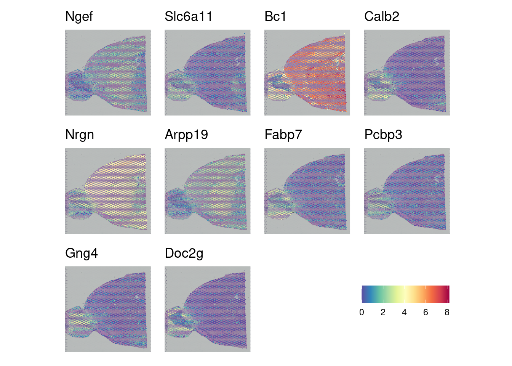

Chapter 5 Spatially Variable Genes (SVGs) Discovery with SPARK-X
Now that we know our gene expression across the sample, are there genes whose expression varies across the sample in a significant way? This information can be used to study tissue structure, assess spatially-related gene expression, and determine cell-cell communication (although we will look at this specific topic in a later section). There are again many software options for this step using a variety of methods. Some use a Gaussian model (SpatialDE, nnSVG, SOMDE) that provide good results but scale significantly with dataset size. SPARK-X uses non-parametric methods to evaluate the independence of expression of a gene with location on the tissue. This approach requires significantly less RAM, even for large datasets.
When finished with this step, we will have data on which genes vary in their expression across the tissue sample and a figure to show as much.
As always, we first load the necessary libraries.
rm(list = ls()) # This clears your environment of any variables there. We do
#this to keep things tidy.
library(ggpubr)
library(patchwork)
library(dplyr)
library(SPARK)
library(Seurat)
# Easy to change variables for our project folder structure
data_dir <- "datasets"
fig_dir <- "figures"
# This sets to the size of figures in inches
two_panel = 3.5
one_pnael = two_panel/2
# We can do automatic figure numbering.
fig_num = 15.1 Importing and Preparing Data
Using readRDS we can load in our saved Seurat object. Using GetAssayData and GetTissueCoordinates from Seurat, we can create two variables that contain the raw expression counts and the spatial coordinates respectively. Note if you have not yet removed mitochondrial genes, this should be performed before running this analysis.
5.2 Running SPARK-X
With a single sparkx command, spatial information and gene expression are used to determine which gene’s expression differs by tissue area.
## ## ===== SPARK-X INPUT INFORMATION ====
## ## number of total samples: 2779
## ## number of total genes: 21201
## ## Running with single core, may take some time
## ## Testing With Projection Kernel
## ## Testing With Gaussian Kernel 1
## ## Testing With Gaussian Kernel 2
## ## Testing With Gaussian Kernel 3
## ## Testing With Gaussian Kernel 4
## ## Testing With Gaussian Kernel 5
## ## Testing With Cosine Kernel 1
## ## Testing With Cosine Kernel 2
## ## Testing With Cosine Kernel 3
## ## Testing With Cosine Kernel 4
## ## Testing With Cosine Kernel 55.3 Visualizing SVGs
Now that we have a list of spatially variable genes, we can look at them across our tissue sample using the Seurat SpatialFeaturePlot. Here we look at the top 10 most significantly spatially variable genes.
top10 <- brain_spark$res_mtest %>%
filter(between(adjustedPval, 0, 0.05)) %>%
top_n(-10, adjustedPval)
fig <- SpatialFeaturePlot(brain_ant, features = c(rownames(top10)),
keep.scale = "all", combine = FALSE)
fig[[1]] <- fig[[1]] + theme(legend.title = element_blank())
leg <- ggpubr::get_legend(fig[[1]])
for (i in 1:length(fig)) {
fig[[i]] <- fig[[i]] + NoLegend() + labs(title = rownames(top10[i,])) +
theme(text = element_text(family = "Helvetica"))
}
fig_2 <- wrap_plots(fig, ncol = 4) + plot_spacer() + leg
fig_2
5.4 Saving Data
We can save our SPARK-X output to an rds file for quick loading to look at specific data or create new figures.
## R version 4.4.3 (2025-02-28)
## Platform: x86_64-pc-linux-gnu
## Running under: Linux Mint 21
##
## Matrix products: default
## BLAS: /usr/lib/x86_64-linux-gnu/blas/libblas.so.3.10.0
## LAPACK: /usr/lib/x86_64-linux-gnu/lapack/liblapack.so.3.10.0
##
## locale:
## [1] LC_CTYPE=en_US.UTF-8 LC_NUMERIC=C
## [3] LC_TIME=en_US.UTF-8 LC_COLLATE=en_US.UTF-8
## [5] LC_MONETARY=en_US.UTF-8 LC_MESSAGES=en_US.UTF-8
## [7] LC_PAPER=en_US.UTF-8 LC_NAME=C
## [9] LC_ADDRESS=C LC_TELEPHONE=C
## [11] LC_MEASUREMENT=en_US.UTF-8 LC_IDENTIFICATION=C
##
## time zone: America/New_York
## tzcode source: system (glibc)
##
## attached base packages:
## [1] stats graphics grDevices utils datasets methods base
##
## other attached packages:
## [1] Seurat_5.2.1 SeuratObject_5.0.2 sp_2.2-0 SPARK_1.1.1
## [5] dplyr_1.1.4 patchwork_1.3.0 ggpubr_0.6.0 ggplot2_3.5.1
##
## loaded via a namespace (and not attached):
## [1] RColorBrewer_1.1-3 rstudioapi_0.17.1 jsonlite_1.9.0
## [4] magrittr_2.0.3 spatstat.utils_3.1-2 farver_2.1.2
## [7] rmarkdown_2.29 ragg_1.3.3 vctrs_0.6.5
## [10] ROCR_1.0-11 spatstat.explore_3.3-4 CompQuadForm_1.4.3
## [13] rstatix_0.7.2 htmltools_0.5.8.1 broom_1.0.7
## [16] Formula_1.2-5 sass_0.4.9 sctransform_0.4.1
## [19] parallelly_1.42.0 pracma_2.4.4 KernSmooth_2.23-26
## [22] bslib_0.9.0 htmlwidgets_1.6.4 ica_1.0-3
## [25] plyr_1.8.9 plotly_4.10.4 zoo_1.8-13
## [28] cachem_1.1.0 igraph_2.1.4 mime_0.12
## [31] lifecycle_1.0.4 iterators_1.0.14 pkgconfig_2.0.3
## [34] Matrix_1.7-2 R6_2.6.1 fastmap_1.2.0
## [37] fitdistrplus_1.2-2 future_1.34.0 shiny_1.10.0
## [40] digest_0.6.37 colorspace_2.1-1 tensor_1.5
## [43] RSpectra_0.16-2 irlba_2.3.5.1 textshaping_1.0.0
## [46] labeling_0.4.3 progressr_0.15.1 spatstat.sparse_3.1-0
## [49] httr_1.4.7 polyclip_1.10-7 abind_1.4-8
## [52] compiler_4.4.3 withr_3.0.2 doParallel_1.0.17
## [55] backports_1.5.0 carData_3.0-5 fastDummies_1.7.5
## [58] ggsignif_0.6.4 MASS_7.3-64 tools_4.4.3
## [61] lmtest_0.9-40 httpuv_1.6.15 future.apply_1.11.3
## [64] goftest_1.2-3 glue_1.8.0 nlme_3.1-168
## [67] promises_1.3.2 grid_4.4.3 Rtsne_0.17
## [70] cluster_2.1.8.1 reshape2_1.4.4 generics_0.1.3
## [73] gtable_0.3.6 spatstat.data_3.1-4 tidyr_1.3.1
## [76] data.table_1.17.0 car_3.1-3 spatstat.geom_3.3-5
## [79] RcppAnnoy_0.0.22 ggrepel_0.9.6 RANN_2.6.2
## [82] foreach_1.5.2 pillar_1.10.1 stringr_1.5.1
## [85] spam_2.11-1 RcppHNSW_0.6.0 later_1.4.1
## [88] splines_4.4.3 lattice_0.22-5 survival_3.8-3
## [91] deldir_2.0-4 tidyselect_1.2.1 miniUI_0.1.1.1
## [94] pbapply_1.7-2 knitr_1.49 gridExtra_2.3
## [97] bookdown_0.42 scattermore_1.2 xfun_0.51
## [100] matrixStats_1.5.0 stringi_1.8.4 lazyeval_0.2.2
## [103] yaml_2.3.10 evaluate_1.0.3 codetools_0.2-19
## [106] tibble_3.2.1 cli_3.6.4 uwot_0.2.3
## [109] matlab_1.0.4.1 systemfonts_1.2.1 xtable_1.8-4
## [112] reticulate_1.41.0 munsell_0.5.1 jquerylib_0.1.4
## [115] Rcpp_1.0.14 globals_0.16.3 spatstat.random_3.3-2
## [118] png_0.1-8 spatstat.univar_3.1-1 parallel_4.4.3
## [121] dotCall64_1.2 listenv_0.9.1 viridisLite_0.4.2
## [124] scales_1.3.0 ggridges_0.5.6 purrr_1.0.4
## [127] rlang_1.1.5 cowplot_1.1.3